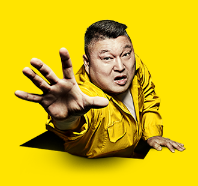
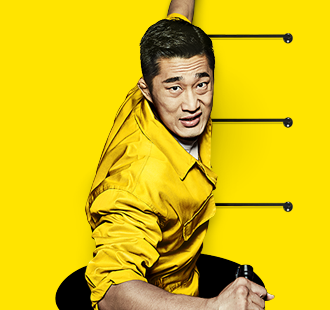
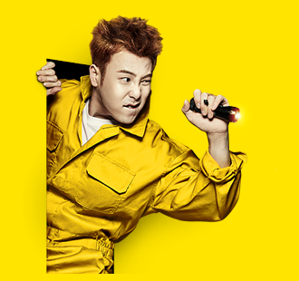
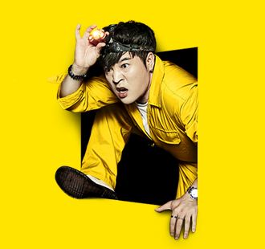
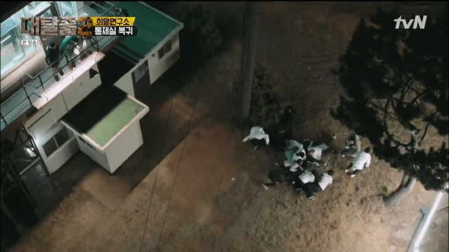
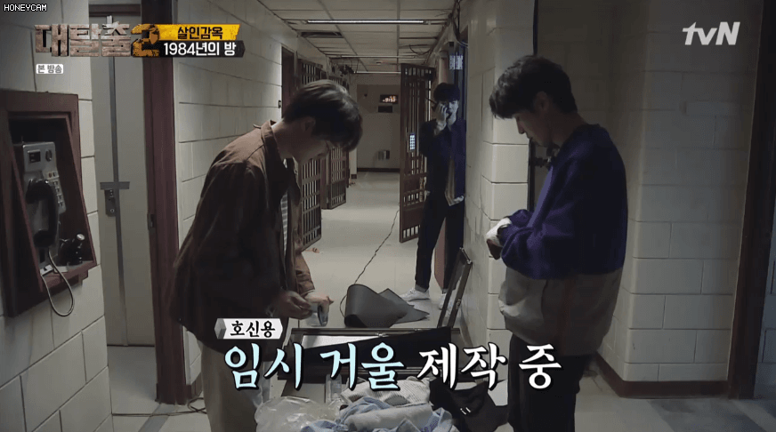
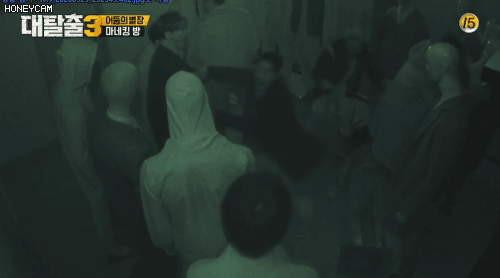
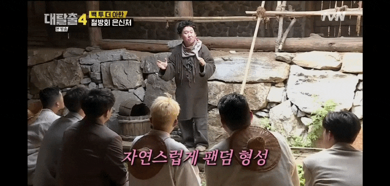
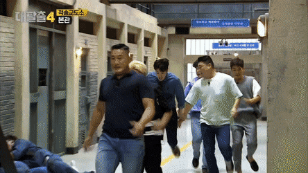
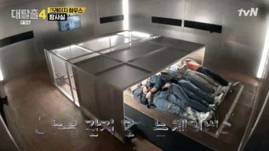

대탈출의 no.1 브레인이다.서강대 출신
대탈출 최적의 단서소리꾼!
대탈출에서 요하는 모든 조건을 고루 갖춘 그야말로 최적의 캐릭터이다. 궁극의 탈출러 문제 해결, 순발력, 추리, 개그 거의 모든 요소들을 고루 갖췄다.
그 중에서도 세계관을 가장 잘 이해하고, 기억하며 멤버들에게 적절히 설명해주는 능력이 최고치다.
･ิĹ̯･ิ ← 유병재 닮았다
강호동

"부수면 그곳이 길이지."
탈출폭격기
아기 돼지
힘캐
대탈출의 꼰대(?)
, 탈출 꿈나무라고 불렸으나 이내 탈출 폭격기로 불리게 된다.
이후로는 명실상부 대탈출의 에이스로 자리잡았다.
이에 더해 '모든 것이 다 단서다'란 신념까지 생기고 다른 멤버들에게도 전파하는 모습을 보인다. ???: 모든게 다~ 단서야
김종민
"나 지금 뭐 찾은 거 같은데?"
김종문
김발견
간헐적 천재
촉촉한 눈의 소유자이다.'태양여고'편의 이성에게 먹히는 자신의 포인트를 말하라는 안대 미션에서.... 가장 먼저 행동하고 단서를 찾아내며, 순발력의 제왕차분히 추리하는 상황보다 시간제한이 걸리거나 돌발 상황이 닥쳤을 때 최고의 활약을 보인다.
대탈출 방영 전만 해도 기존의 어리버리 이미지 때문에 굵직한 활약이 없을 것이라고 추측했으나
비슷한 추리 예능인 넷플릭스의 '범인은 바로 너'에 출연한 경험이 있어서인지 단서나 새로운 장소 등을 발견하는데 있어서 많은 활약을 선보이고 있다. 행운아 덕분에 '김발견'이란 칭호를 받았고 때로는 에피소드의 내용 전개에 전환을 주는 역할도 하고 있다.
다만 너무 운빨이라고 평가절하당하는 경우도 있다.
김동현

"겁은 아니죠. 반사신경이죠."
김호들
부력강자
겁쟁이 파이터
대탈출을 위해 '머리 좋아지는 약'을 먹는다고 한다. 실제로 그 이후 활약상이 늘어나며 약 정보를 묻는 디엠이 많이 오기도 했다고 (...)진짜로 효과가 있었던 건지는 미지수 처음에는 UFC 경력과 그에 따른 피지컬 덕분에 강호동과 함께 체력적으로 부각이 되는 멤버라고 여겨졌으나 힘캐 폐병원 에피소드에서 자신이 문을 열자 문틈 사이로 툭 떨어진 시신의 머리에 소스라치게 놀라는 모습을 기점으로 개그캐로 자리 잡았다. ???:저는 이게 무서운건지 모르겠어요 이후에도 겁만 잔뜩 먹고 호들갑치는 모습 때문에 '김호들'이라는 별명을 받게 된다.
피오

"형... 형! 같이 가요!"
프로보필러
막내
엉성하다.그치만 귀엽다.
처음에 활약이 없다 보니, 프로그램 홍보를 위해 호감도 높은 캐릭터를 병풍으로 하나 넣어둔 거 아니냐는 시선도 더러 있었다.
하는 게 뭐야 본인도 의식을 한 모양인지 어떻게든 어필을 하려고 프로보필러라고 칭해진 것이 별명으로 굳어졌다.
그래도 보필을 잘하는 적극성 덕분에 보필러라는 이미지를 정착시켰다.
신동

"결정적 순간에는 패턴이 존재하죠."
신대장
황소개구리
기계마스터
기계류를 잘 다룬다.피씨방 사장님
초기부터 지금까지 브레인 역할을 하는 대탈출의 두뇌파 에이스이다.
고난이도의 문제가 나올 때면 멤버들이 거의 1차적으로 신동에게 의존한다.
이 모습 때문에 강호동이 얼떨결에 "신대장"이라고 부른 게 별명으로 자리 잡았다.
무서운 에피소드에서는 활약을 잘 하지 못하는 모습울 보인다.???:오늘 나 활약 별로 못할 것 같애 ㅠㅠ
개인적인 best 에피소드 정리
시즌 회차
에피소드
시즌1
폐병원
시즌2
미래대학교
시즌3
어둠의 별장
시즌4
적송교도소
시즌 1,2,3,4
미래대학교
highlight
시즌1
사설도박장
악령감옥
폐병원
시즌2
미래대학교
희망연구소

살인감옥

시즌3
타임머신 연구실
좀비 공장
어둠의 별장

시즌4
백 투 더 아한

적송교도소

크레이지 하우스

치지직....
치직...
여기까지 보셨나요? 사실 이 글을 보고 있는 여러분들은 이미 대탈출 유니버스에 들어와계신 겁니다. 자, 이제 탈출을 시작해보도록 하죠.